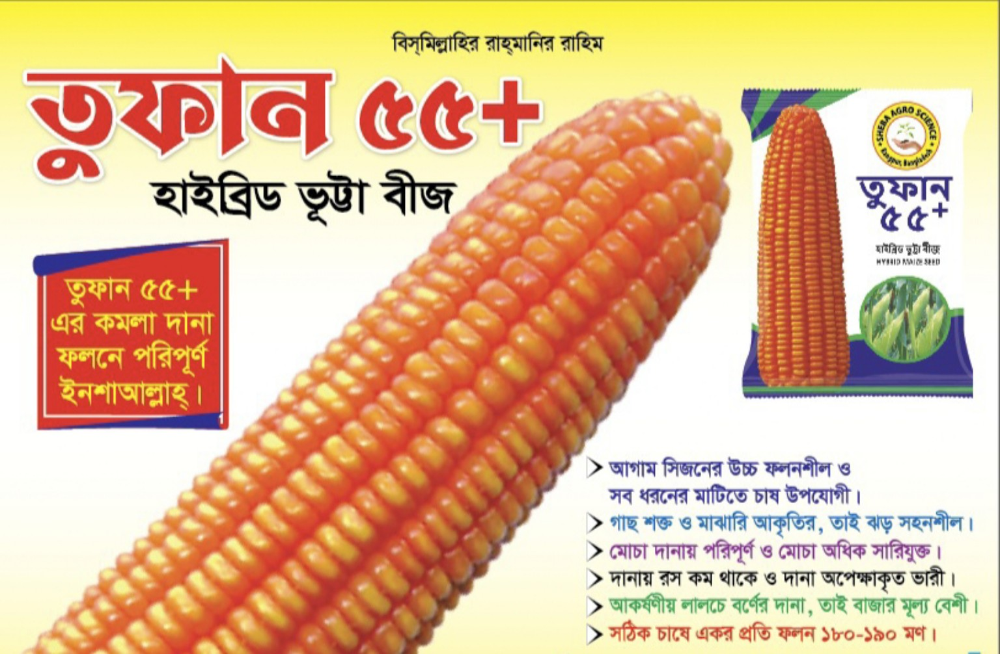
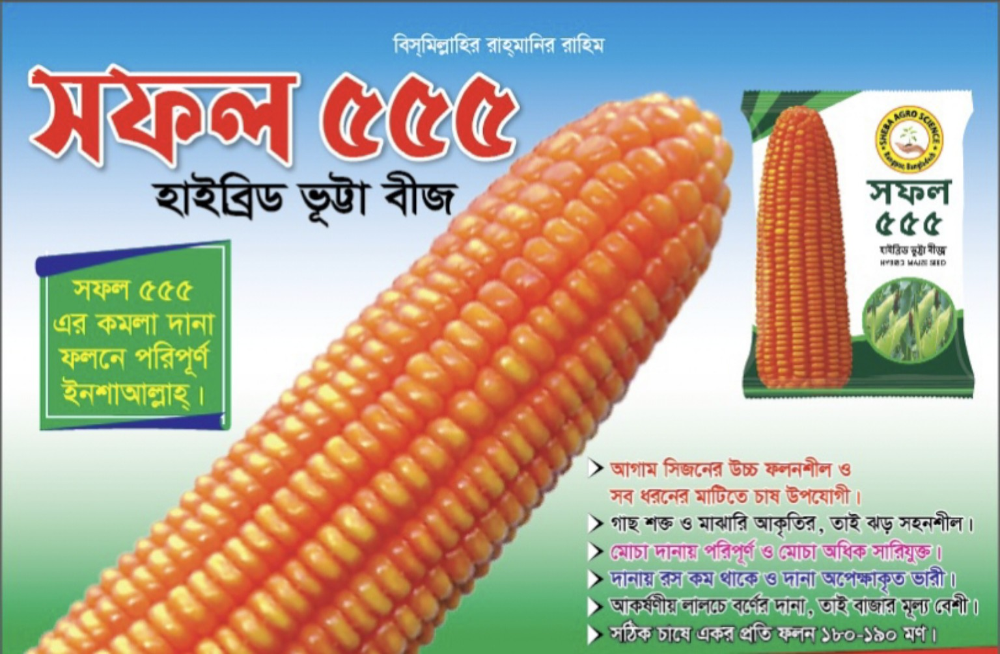

Hybrid Maize Seed
তুফান ৫৫+ | Tufan 55+
কমলা/লালচে দানার হাইব্রিড ভুট্টা বীজ। বিস্তারিত বৈশিষ্ট্য ও চাষ-সংক্রান্ত তথ্য দেখুন।
বিস্তারিত | View Detailsভুট্টার হাইব্রিড বীজ | Hybrid Maize Seeds
বর্তমানে আমাদের তালিকায় দুটি ভুট্টার আইটেম রয়েছে। নতুন পণ্য পরে যুক্ত করা হবে।

কমলা/লালচে দানার হাইব্রিড ভুট্টা বীজ। বিস্তারিত বৈশিষ্ট্য ও চাষ-সংক্রান্ত তথ্য দেখুন।
বিস্তারিত | View Details
পণ্যের বিস্তারিত তথ্য প্রস্তুত করা হচ্ছে।
বিস্তারিত | View Details